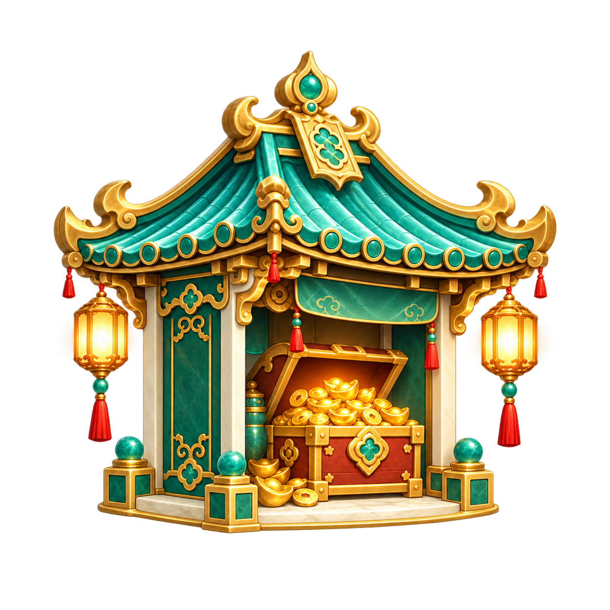
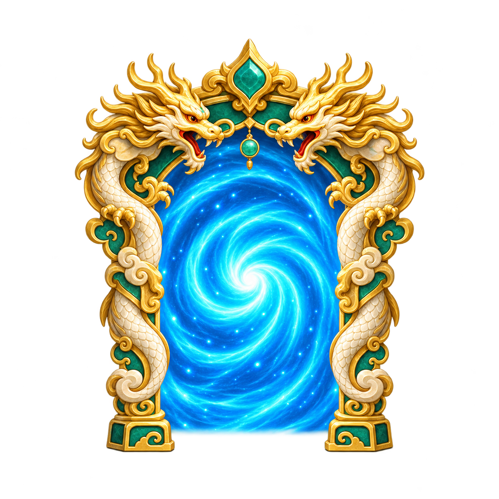
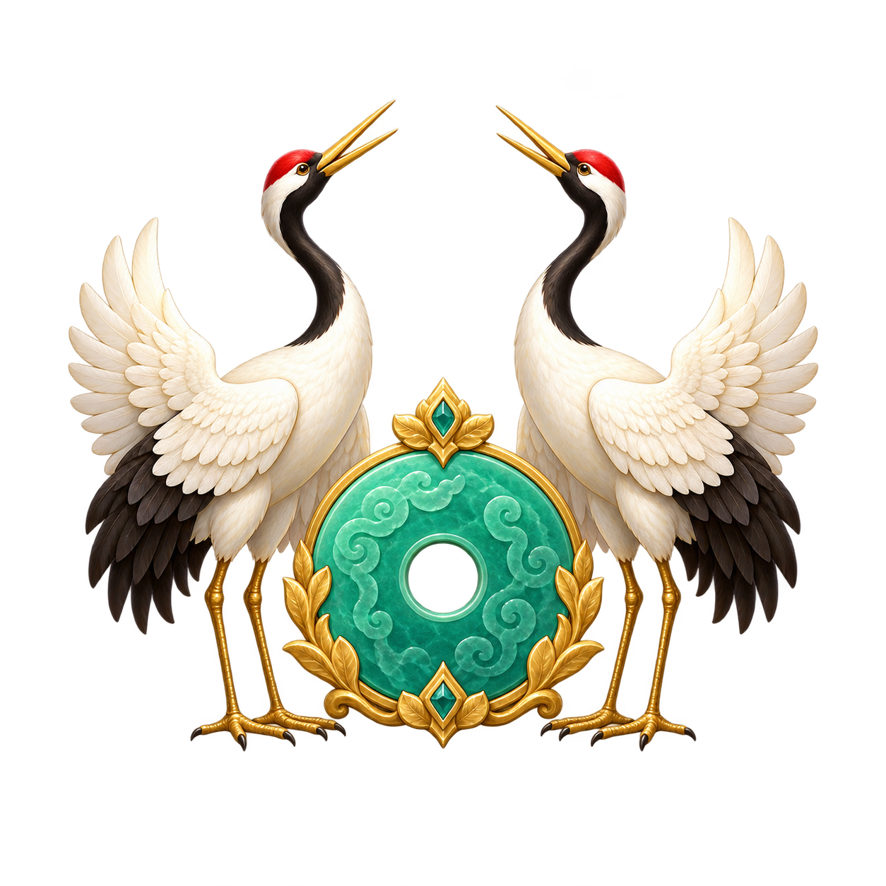

公共浮岛底座 · 原大小 1254 × 1254 · entrance-base@v1
1920 × 1080 · 同一底座参考重绘 · 统一支撑台面与清晰度
主体独立透明层，不再复用放大的 128px 图标。



下方每项按原始像素 1:1 显示，较大图片滚动查看；主体与公共底座独立保存。
公共浮岛底座 · 原大小 1254 × 1254 · entrance-base@v1
商店主体 · 原大小 1254 × 1254 · shop-pavilion@v2
任务卷轴 · 原大小 1254 × 1254 · quest-scroll@v2
副本传送门 · 原大小 1254 × 1254 · dungeon-portal@v2
好友双鹤 · 原大小 1254 × 1254 · friends-cranes@v2
邮件主体 · 原大小 1254 × 1254 · mail-frame@v2